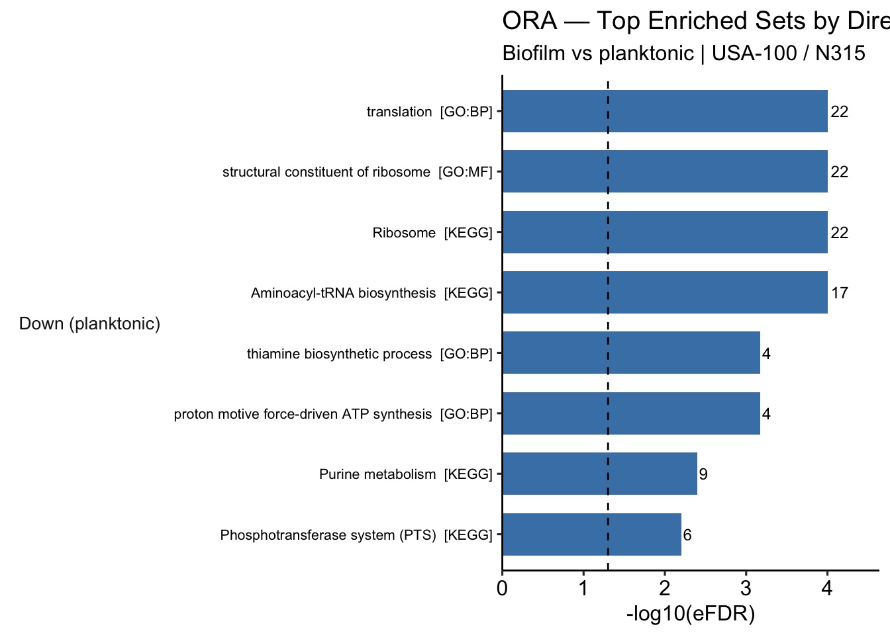

Part 1 — Over-Representation Analysis (ORA)
ORA asks: “Are my significant DE genes enriched in any gene set more than expected by chance?”
It uses a hypergeometric test with empirical FDR (eFDR) correction via resampling, which accounts for interdependence between gene sets.
- Query set — significant DE genes (padj < 0.05, |LFC| >= log2(3), a 3-fold change), split by direction
- Background — all genes tested by DESeq2 for this contrast
- Gene sets — KEGG, GO:BP, GO:MF
Key assumption: ORA treats all significant genes equally — it ignores the magnitude of fold change. Running it separately on up- and down-regulated genes partially addresses this, which is why we split the query set below. For a fully ranked approach, see Part 2 (GSEA).
Prepare Input
sig_up <- res_df %>% filter(dir_here == "Up") %>% pull(gene_id)
sig_down <- res_df %>% filter(dir_here == "Down") %>% pull(gene_id)
background <- res_df$gene_id
cat("Up-regulated genes :", length(sig_up), "\n")## Up-regulated genes : 156## Down-regulated genes : 126## Background (all tested) : 2288Tip: The background is all genes tested for this contrast, not the whole genome. DESeq2 already filtered to expressed genes, so this table is the correct pool. Using the full genome would inflate the background and produce over-optimistic p-values.
Run ORA
ORA is run for each collection and each direction, with a helper to avoid code duplication.
Empty query sets (no genes in that direction) are skipped and return NULL.
set.seed(42)
# mulea's ora() expects the gmt as a data.frame whose `list_of_values` is an
# AsIs list column (built with I()). A plain tibble list-column is coerced
# differently by the parallel workers and errors, so we rebuild it here.
as_mulea_gmt <- function(gmt) {
data.frame(
ontology_id = gmt$ontology_id,
ontology_name = gmt$ontology_name,
list_of_values = I(gmt$list_of_values),
stringsAsFactors = FALSE
)
}
run_ora <- function(query, background, gmt) {
if (length(query) == 0 || nrow(gmt) == 0) return(NULL)
model <- ora(
gmt = as_mulea_gmt(gmt),
element_names = query,
background_element_names = background,
p_value_adjustment_method = "eFDR",
number_of_permutations = 1000
)
mulea::run_test(model)
}
# run per collection so we can label the source in the output
ora_by_source <- function(query, background) {
map_dfr(c("KEGG", "GO:BP", "GO:MF"), function(src) {
g <- all_gmt %>% filter(source == src)
r <- run_ora(query, background, g)
if (is.null(r) || nrow(r) == 0) return(NULL)
r %>% mutate(source = src)
})
}
ora_up <- ora_by_source(sig_up, background)
ora_down <- ora_by_source(sig_down, background)
n_sig <- function(x) if (is.null(x) || nrow(x) == 0) 0 else sum(x$eFDR < 0.05, na.rm = TRUE)
cat("Up — significant sets (eFDR < 0.05):", n_sig(ora_up), "\n")## Up — significant sets (eFDR < 0.05): 0## Down — significant sets (eFDR < 0.05): 10Note: If a direction returns no significant sets, its table and plot below will be empty. That is a valid outcome, not an error.
Filter and Inspect Significant Sets
get_sig <- function(x) {
if (is.null(x) || nrow(x) == 0) return(x[0, , drop = FALSE])
x %>% filter(eFDR < 0.05) %>% arrange(eFDR)
}
ora_up_sig <- get_sig(ora_up)
ora_down_sig <- get_sig(ora_down)
cat("Significant up sets :", nrow(ora_up_sig), "\n")## Significant up sets : 0## Significant down sets: 10Up-regulated genes — enriched sets (biofilm-associated)
show_ora_table <- function(sig, caption) {
if (nrow(sig) == 0) { cat("No significant enriched sets.\n"); return(invisible()) }
DT::datatable(
sig %>%
select(source, ontology_id, ontology_name,
nr_common_with_tested_elements,
nr_common_with_background_elements, p_value, eFDR) %>%
mutate(across(where(is.numeric), \(x) signif(x, 4))),
rownames = FALSE,
colnames = c("Source", "ID", "Set", "Hits in query",
"Hits in background", "p-value", "eFDR"),
extensions = c("Buttons", "Scroller"),
options = list(dom = "Bfrtip", buttons = c("copy", "csv"),
scrollX = TRUE, scrollY = 300, scroller = TRUE),
caption = caption
)
}
show_ora_table(ora_up_sig, "Significant ORA sets — UP-regulated (biofilm) genes")## No significant enriched sets.Down-regulated genes — enriched sets (planktonic-associated)
Critical Interpretation — Watch for Spurious Hits
Always ask: does this set make biological sense, and is it big enough to trust?
Very small gene sets are prone to spurious enrichment: if a set has only 3–4 genes in the background and they all happen to be DE, it scores as maximally significant regardless of biological relevance. When reading the tables above:
- Check the set size — very small sets (few genes) are fragile.
- Check the overlap — 100% overlap in a tiny set is statistically inevitable, not impressive.
- Ask whether the set is plausible for S. aureus and for a biofilm/planktonic switch.
- Cross-reference with GSEA — a set found by both methods is higher confidence.
We built the collections with a minimum of 5 genes per set to reduce this, but scrutiny is still part of interpretation.
Bar Plot — Top Enriched Sets by Direction
The strongest sets in each direction, ranked by -log10(eFDR). The number of DE genes hitting
each set is printed at the end of each bar. Up-regulated (biofilm) and down-regulated
(planktonic) are shown in separate facets.
prep_ora <- function(sig, label, n = 8) {
if (nrow(sig) == 0) return(NULL)
sig %>%
slice_head(n = n) %>%
transmute(
set_label = paste0(ontology_name, " [", source, "]"),
hits = nr_common_with_tested_elements,
eFDR = ifelse(eFDR == 0, 1e-4, eFDR), # floor for plotting log
neglog10 = -log10(eFDR),
direction = label
)
}
ora_plot_df <- bind_rows(
prep_ora(ora_up_sig, "Up (biofilm)"),
prep_ora(ora_down_sig, "Down (planktonic)")
)
if (!is.null(ora_plot_df) && nrow(ora_plot_df) > 0) {
ora_plot_df <- ora_plot_df %>%
mutate(
direction = factor(direction, levels = c("Up (biofilm)", "Down (planktonic)")),
set_label = reorder(paste(set_label, direction, sep = "___"), neglog10)
)
ggplot(ora_plot_df, aes(x = neglog10, y = set_label, fill = direction)) +
geom_col(width = 0.7, show.legend = FALSE) +
geom_text(aes(label = hits), hjust = -0.2, size = 3.2) +
geom_vline(xintercept = -log10(0.05), linetype = "dashed", linewidth = 0.5) +
facet_grid(direction ~ ., scales = "free_y", space = "free_y", switch = "y") +
scale_y_discrete(labels = function(x) sub("___.*$", "", x)) +
scale_fill_manual(values = c("Up (biofilm)" = "firebrick",
"Down (planktonic)" = "steelblue")) +
scale_x_continuous(expand = expansion(mult = c(0, 0.16))) +
theme_pubr() +
theme(
strip.background = element_blank(),
strip.placement = "outside",
strip.text.y.left = element_text(angle = 0, size = 10),
panel.grid.major.y = element_blank(),
axis.text.y = element_text(size = 8)
) +
labs(
title = "ORA — Top Enriched Sets by Direction (eFDR < 0.05)",
subtitle = paste0("Biofilm vs planktonic | ", cfg$label),
x = "-log10(eFDR)",
y = NULL
)
} else {
cat("No significant sets to plot.\n")
}